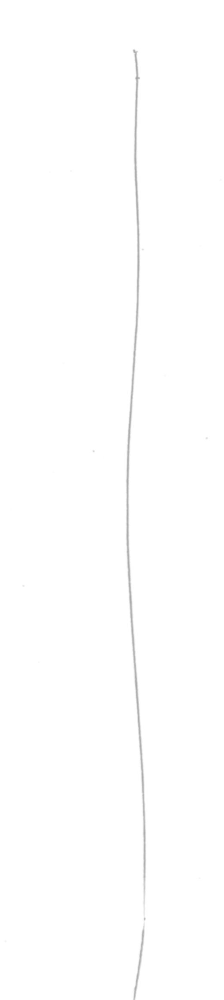
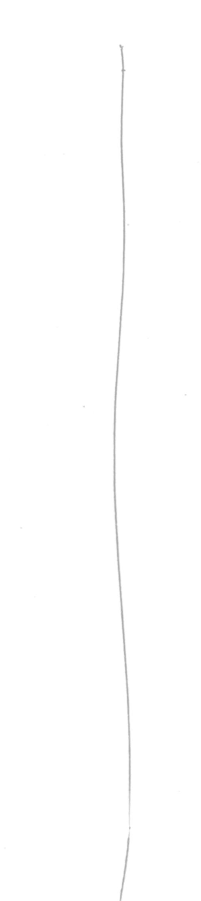

Serbien, 6. Apr., 4.02 PM
Die letzten drei Tage waren, glaube ich, das Schwierigste, was ich je in meinem Leben gemacht habe. Irgendwie vor drei oder vier Tagen. Der Tag war eigentlich ganz gut. Ich bin so 35 Kilometer gelaufen und dachte, ich schlage jetzt hier irgendwo mein Zelt auf. Und dann kam aber so ein Bauernhof irgendwie und der Typ kam raus und hat mich hergerufen, hat aber kein Englisch gesprochen und irgendwie war der bisschen creepy. Es war halt mitten im Nirgendwo und ich glaube, da ist noch nie jemand vorbeigekommen, der nicht da, keine Ahnung, auf jeden Fall mal jemand, der kein Serbisch spricht. Und keine Ahnung. Ich bin dann einfach irgendwann weggegangen und dachte, ich laufe jetzt einfach noch ein bisschen, bevor ich mein Zelt aufschlag, weil das irgendwie... Komisch war und die ganzen Felder waren, haben auch bestimmt ihm gehört. Genau und dann kam aber irgendwann noch so ein Bauernhof und dann war ich genau zwischen denen und keine Ahnung, wollte ich irgendwie nach rechts ab, damit ich von denen wegkomme.
Und auf einmal war das ganze Feld unter Wasser. Und dann musste ich da durchwarten bis zum Knien.
01:32) Es war so kalt. Es hat gerade gedämmert und habe dann auf irgend so einem Feld mein Zelt aufgebaut
und es hat schon so krass angefangen zu stürmen und es hat aufgebaut, hat mich reingelegt und irgendwie war es ein komischer Stimmung wegen diesen Bauernhöfen. Ich war auch in sichtweite. Hat sich alles nicht so gut angefühlt. Und dann war ich im Zelt und der Wind wurde immer schlimmer. Und irgendwann sind die Heringe rausgeflogen. Ich bin wieder raus und die Heringe wieder reingemacht und das hat sich gefühlt, als würde die Welt untergehen. Das war so ein krasses Unwetter. Ich habe die wieder reingemacht. Fünf Minuten später waren sie wieder draußen. Ich bin drei oder viermal raus, habe die wieder reingemacht. Irgendwann habe ich sie nicht mehr gefunden. Und das Zelt ist nur noch, keine Ahnung, irgendwann sind die Stangen einfach eingeklappt.
(03:00) Ich habe mich dann unter die Plane gelegt und keine Ahnung, ich war am Ende mit der Welt und meinem Leben. Ich wollte einfach nimmer. Ich habe mich hingekniet, die Stirn auf die Matte und die Hände über den Kopf und habe so ewig lang gelegen. Keine Ahnung. Ich war sogar zu überfordert, zu heulen. Ich weiß nicht, es hört sich jetzt gar nicht so schlimm an, aber das war eine der schlimmsten Nächte in meinem Leben.
Und keine Ahnung, ich habe natürlich nicht geschlafen, irgendwann so um fünf oder so, dann bin ich einfach raus und habe... meine Strümpfe und Schuhe waren komplett nass gefroren und die musste ich anziehen und es war so kalt.
(04:45) Und mittlerweile hat es auch geschneit. Aber durch den Wind hat sich das eher angefühlt wie Hagel irgendwie. Keine Ahnung. Ich habe dann alles eingepackt und bin einfach losgelaufen und es ging die ganze Zeit einfach nur übers Feld. Nirgendwo kilometerweit war keine Deckung vor dem Wind. Das war so schlimm und so kalt und noch dunkel und ich bin dann so bis acht oder so gelaufen, und habe dann so eine Kuhle im Boden gefunden, die etwas windgeschützt war. Habe da mein Zelt aufgebaut und habe 24 Stunden einfach nur auf meiner Isomatte gelegen, bin nicht rausgegangen, habe in der Flasche gepinkelt und mein Trinken war sowieso leer. Keine Ahnung. Und dann am nächsten Tag bin ich dann morgens habe ich wieder zusammengepackt und bin losgelaufen. Der Wind war nicht mehr ganz so stark, aber es hat immer noch geschneit und meine Sachen waren immer noch nass. Aber wenigstens der Wind war nicht mehr ganz so krass. Und das ist der Wind, das ist das Schlimmste.
(06:31) Ich bin heute Morgen wieder los. Mir geht es auf jeden Fall besser. Also mir geht es gut. Ich habe zwar richtig harte Blasen wieder, aber abgesehen davon geht es mir gut. Ja, das Problem war auch mit dem Wasser. Ich hatte drei Liter für drei Tage.


 
